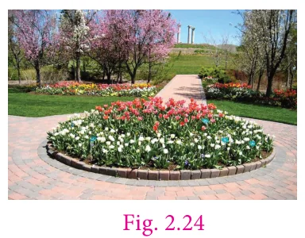

We come across pathways in different shapes. Here we restrict ourselves to two kinds of pathways namely circular and rectangular.
2.5.1. Circular Pathways

We observe around us circular shapes where we need to find the area of the pathway. The area of pathway is the difference between the area of outer circle and inner circle. Let '\(R\)' be the radius of the outer circle and '\(r\)' be the radius of inner circle.
Therefore, the area of the circular pathway
\(= \pi R^{2} - \pi r^{2}\)
\(= \pi(R^{2} - r^{2})\) sq. units.
2.5.2 Rectangular Pathways
Consider a rectangular park as shown in Fig 2.23. A uniform path is to be laid outside the park. How do we find the area of the path? The uniform path including the park is also a rectangle. If we consider the path as outer rectangle, then the park will be the inner rectangle. Let \(l\) and \(b\) be the length and breadth of the park. Area of the park (inner rectangle) \(= l\,b\) sq.units. Let \(w\) be the width of the path. If \(L\), \(B\) are the length and breadth of the outer rectangle, then \(L = l + 2w\) and \(B = b + 2w\).

Here, the area of the rectangular pathway
= Area of the outer rectangle \(-\) Area of the inner rectangle
\(= (LB - lb)\) sq. units
Example 2.15 A park is circular in shape. The central portion has playthings for kids surrounded by a circular walking pathway. Find the walking area whose outer radius is 10 m and inner radius is 3 m.
Solution
The radius of the outer circle, \(R = 10\ \text{m}\)
The radius of the inner circle, \(r = 3\ \text{m}\)
The area of the circular path = Area of outer circle \(-\) Area of inner circle

\(= \pi R^{2} - \pi r^{2}\)
\(= \pi(R^{2} - r^{2})\) sq.units
\(= \frac{22}{7} \times (10^{2} - 3^{2})\)
\(= \frac{22}{7} \times ((10 \times 10) - (3 \times 3))\)
\(= \frac{22}{7} \times (100 - 9)\)
\(= \frac{22}{7} \times 91\)
\(= 286\ \text{m}^{2}\)
Try these
- If the outer radius and inner radius of the circles are respectively 9 cm and 6 cm, find the width of the circular pathway.
- If the area of the circular pathway is 352 sq.cm and the outer radius is 16 cm, find the inner radius.
- If the area of the inner rectangular region is 15 sq.cm and the area covered by the outer rectangular region is 48 sq.cm, find the area of the rectangular pathway.
Example 2.16 The radius of a circular flower garden is 21 m. A circular path of 14 m wide is laid around the garden. Find the area of the circular path.

Solution
The radius of the inner circle \(r = 21\ \text{m}\)
The path is around the inner circle.
Therefore, the radius of the outer circle, \(R = 21 + 14 = 35\ \text{m}\)
The area of the circular path \(= \pi(R^{2} - r^{2})\) sq.units
\(= \frac{22}{7} \times (35^{2} - 21^{2})\)
\(= \frac{22}{7} \times ((35 \times 35) - (21 \times 21))\)
\(= \frac{22}{7} \times (1225 - 441)\)
\(= \frac{22}{7} \times 784\)
\(= 22 \times 112 = 2464\ \text{m}^{2}\)
Example 2.17 The radius of a circular cricket ground is 76 m. A drainage 2 m wide has to be constructed around the cricket ground for the purpose of draining the rain water. Find the cost of constructing the drainage at the rate of ₹180/- per sq.m.
Solution
The radius of the inner circle (cricket ground), \(r = 76\ \text{m}\)
A drainage is constructed around the cricket ground.
Therefore, the radius of the outer circle, \(R = 76 + 2 = 78\ \text{m}\)
We have, area of the circular path \(= \pi(R^{2} - r^{2})\) sq. units
\(= \frac{22}{7} \times (78^{2} - 76^{2})\)
\(= \frac{22}{7} \times (6084 - 5776)\)
\(= \frac{22}{7} \times 308\)
\(= 22 \times 44 = 968\ \text{m}^{2}\)
Given, the cost of constructing the drainage per sq.m is ₹180.
Therefore, the cost of constructing the drainage \(= 968 \times 180 =\) ₹1,74,240.
Example 2.18 A floor is 10 m long and 8 m wide. A carpet of size 7 m long and 5 m wide is laid on the floor. Find the area of the floor that is not covered by the carpet.
Solution
Here, \(L = 10\ \text{m}\quad B = 8\ \text{m}\)
Area of the floor \(= L \times B\)
\(= 10 \times 8\)
\(= 80\ \text{m}^{2}\)
Area of the carpet \(= l \times b\)
\(= 7 \times 5\)
\(= 35\ \text{m}^{2}\)
Therefore, the total area of the floor not covered by the carpet \(= 80 - 35\)
\(= 45\ \text{m}^{2}\)
Example 2.19 A picture of length 23 cm and breadth 11 cm is painted on a chart, such that there is a margin of 3 cm along each of its sides. Find the total area of the margin.
Solution
Here \(L = 23\ \text{cm}\quad B = 11\ \text{cm}\)
Area of the chart \(= L \times B\)
\(= 23 \times 11\)
\(= 253\ \text{cm}^{2}\)
\(l = L - 2w = 23 - 2(3) = 23 - 6 = 17\ \text{cm}\)
\(b = B - 2w = 11 - 2(3) = 11 - 6 = 5\ \text{cm}\)
Area of the picture \(17 \times 5 = 85\ \text{cm}^{2}\)
Therefore, the area of the margin \(= 253 - 85\)
\(= 168\ \text{cm}^{2}\).
Example 2.20 A verandah of width 3 m is constructed along the outside of a room of length 9 m and width 7 m. Find (a) the area of the verandah (b) the cost of cementing the floor of the verandah at the rate of ₹15 per sq.m.
Solution
Here, \(l = 9\ \text{m},\quad b = 7\ \text{m}\)
Area of the Room \(= l \times b\)
\(= 9 \times 7\)
\(= 63\ \text{m}^{2}\)
\(L = l + 2w = 8 + 2(3) = 8 + 6 = 14\ \text{m}\)
\(B = b + 2w = 5 + 2(3) = 5 + 6 = 11\ \text{m}\)
Area of the room including verandah \(= L \times B\)
\(= 14 \times 11\)
\(= 154\ \text{m}^{2}\)
The area of the verandah = Area of the room including verandah \(-\) Area of the room
\(= 154 - 63\)
\(= 91\ \text{m}^{2}\)
The cost of cementing the floor for 1 sq.m = ₹15
Therfore, the cost of cementing the floor of the verandah \(= 91 \times 15 =\) ₹1365.
Example 2.21 A Kho-Kho ground has dimensions \(30\ \text{m} \times 19\ \text{m}\) which includes a lobby on all of its sides. The dimensions of the playing area is \(27\ \text{m} \times 16\ \text{m}\). Find the area of the lobby.
Solution

From the dimensions of the ground we have,
\(L = 30\ \text{m};\quad B = 19\ \text{m};\quad l = 27\ \text{m};\quad b = 16\ \text{m}\)
Area of the kho kho ground \(= L \times B\)
\(= 30 \times 19\)
\(= 570\ \text{m}^{2}\)
Area of the play field \(= l \times b\)
\(= 27 \times 16\)
\(= 432\ \text{m}^{2}\)
Area of the lobby = Area of Kho-Kho ground \(-\) Area of the play field
\(= 570 - 432\)
\(= 148\ \text{m}^{2}\)